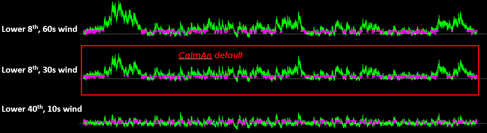
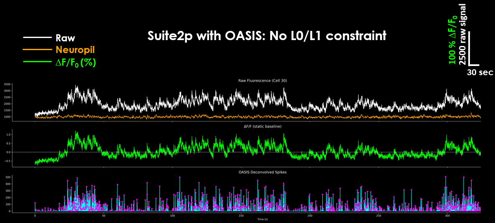

Pipeline Comparison#
This page compares how different calcium imaging analysis pipelines handle ΔF/F calculation, neuropil correction, and spike deconvolution.
Warning
Unit Awareness: Different pipelines use different units and conventions. Suite2p outputs raw fluorescence values while CaImAn outputs ΔF/F directly. Always check the documentation for each pipeline to understand what units your traces are in before comparing across tools.
ΔF/F Calculation Methods#
Different pipelines handle ΔF/F₀ differently:
Pipeline |
F₀ Method |
ΔF/F₀ |
Neuropil |
|---|---|---|---|
CaImAn |
8th percentile, 500-frame window |
Yes, in pipeline |
Modeled via CNMF, no manual subtraction |
Suite2p |
Maximin (default) or 8th percentile |
No, user divides post hoc |
0.7 × Fneu subtracted before baseline |
EXTRACT |
User-defined (e.g. 10th percentile) |
No, user computes |
Implicitly handled via robust model |
CaImAn#
CaImAn computes ΔF/F₀ using a running low-percentile baseline. By default, it uses the 8th percentile over a 500 frame window. The idea is to track the lower envelope of the signal to get F₀ without being biased by transients.
Neuropil/background: CaImAn handles this as part of its CNMF model. Background and neuropil are explicitly separated into distinct spatial/temporal components, so the output traces are background subtracted during this factorization.
{kind=link}

CaImAn uses a default baseline of the lower 8th percentile and a moving window of 200 frames.#
Suite2p#
Suite2p does not output traces in ΔF/F₀ format directly. Instead, it gives you the raw trace and the neuropil, along with spike estimates if you ran deconvolution. The neuropil represents fluorescence from the surrounding non-somatic tissue. As an optional step, many experimenters apply a fixed subtraction:
# F is an [n_neurons x time] array of raw signal
# Fneu is an [n_neurons x time] array of neuropil
F_corrected = F - 0.7 * Fneu
The 0.7 is an empirically chosen scalar to account for the partial contamination. Essentially you subtract 70% of the signal contained in the surrounding neuropil.
{kind=link}

Raw, neuropil, ΔF/F₀ and resulting deconvolved spikes as output by Suite2p.#
EXTRACT#
EXTRACT outputs raw fluorescence signals without built-in ΔF/F₀ calculation. You compute it yourself using something like a low-percentile (e.g. 10%) as F₀. Most users apply a global or sliding percentile window.
Neuropil: Handled implicitly. The algorithm uses robust factorization to ignore background and neuropil. There’s no explicit subtraction or coefficient to tune—it isolates only what fits a consistent spatial footprint and suppresses outliers by design.
Deconvolution Algorithms#
Different pipelines use different approaches to spike deconvolution, each with their own τ (tau) handling:
Pipeline |
Uses τ? |
Range (s) |
Method |
|---|---|---|---|
FOOPSI |
Yes |
~1.0 |
Fixed exponential |
OASIS / CNMF |
Yes |
0.3 – 2.0 |
AR(1/2) model |
Suite2p |
Yes |
0.7 – 1.5 |
OASIS internal |
CaImAn |
Yes |
0.4 – 2.0 |
CNMF-E fit |
CASCADE |
Implicit |
0.3 – 2.0 |
Learned dynamics |
τ defines calcium transient decay and sets temporal resolution of spike inference
Optimal τ depends on both indicator kinetics and frame rate
Pipelines like Suite2p and CaImAn require τ tuning per GECI
CASCADE bypasses explicit τ by learning it implicitly
GCaMP8 series are ~3× faster than GCaMP6
Note
All τ values summarized here reflect in vivo mammalian calcium imaging (typically ~30 Hz frame rate). In vitro or temperature-controlled decay times (e.g., 37 °C) can be >10× shorter. Choosing an incorrect τ biases both spike amplitude and inferred firing rate.
See Also#
See also
User Guide - Complete processing guide
Processing Flow - Suite2p internal processing steps
Postprocessing - ΔF/F and filtering functions
Suite2p Documentation - Suite2p parameter details
CaImAn Documentation - CaImAn algorithm details